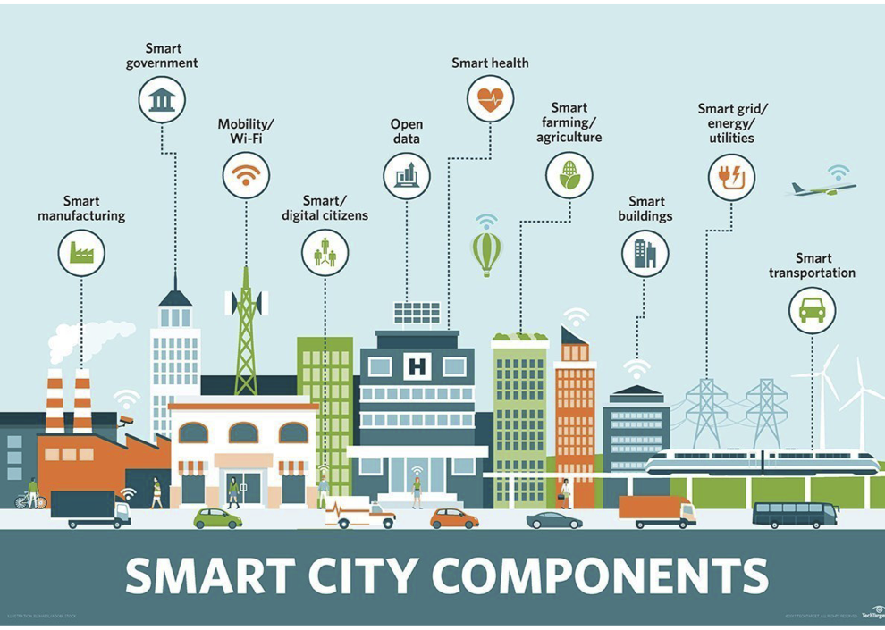
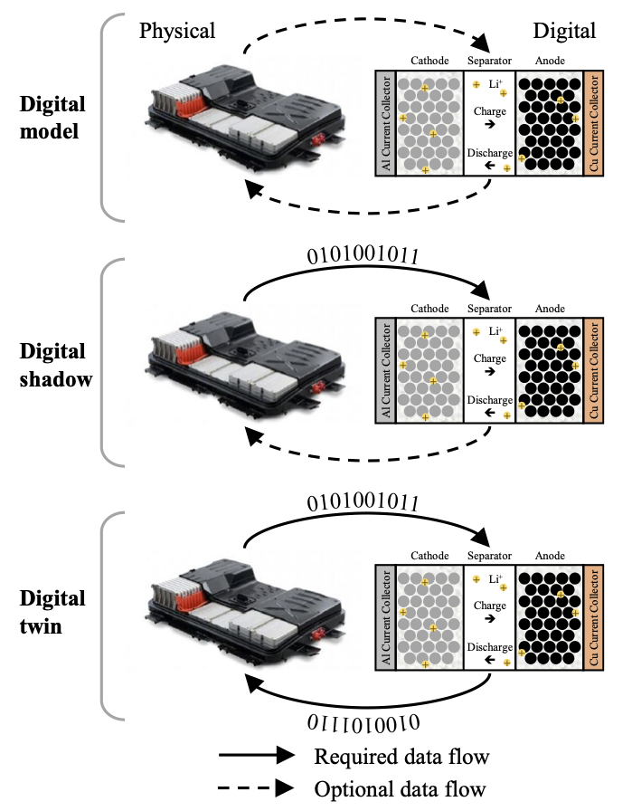
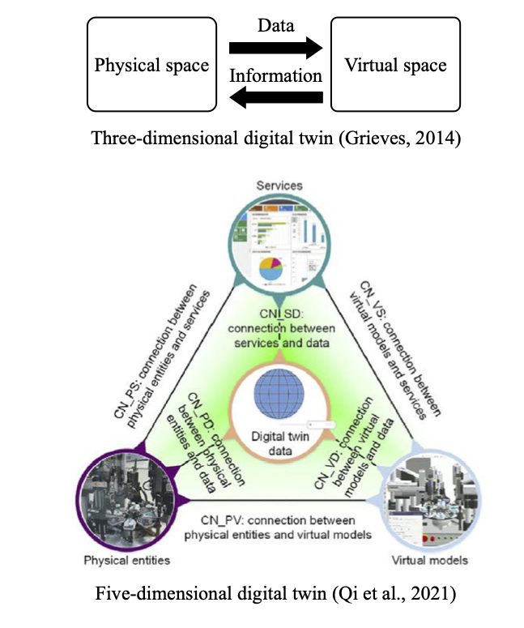
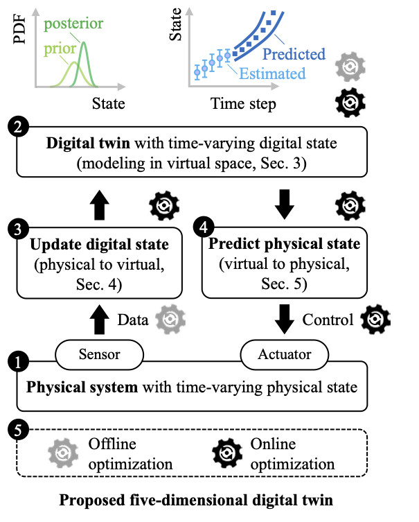
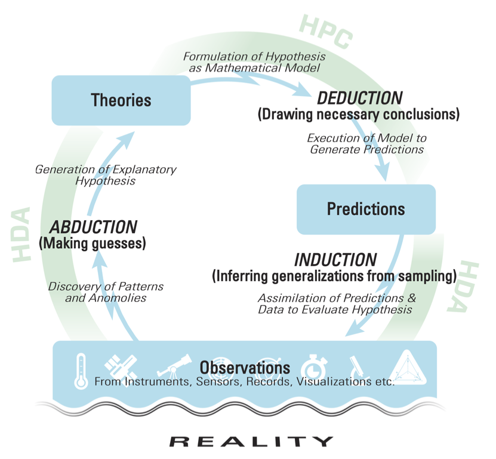
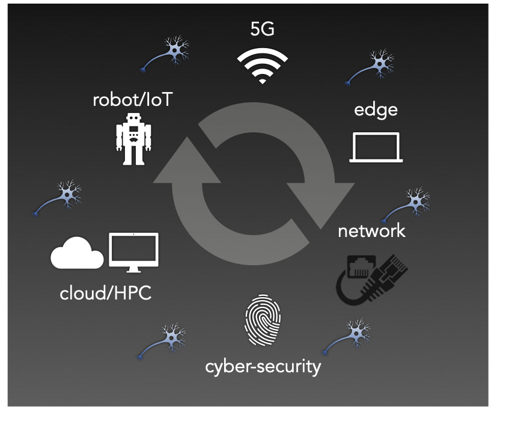
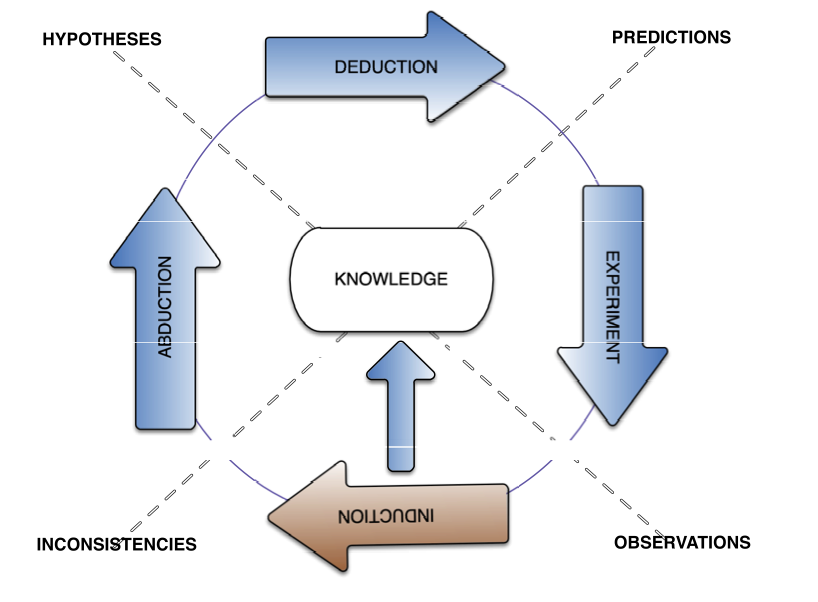
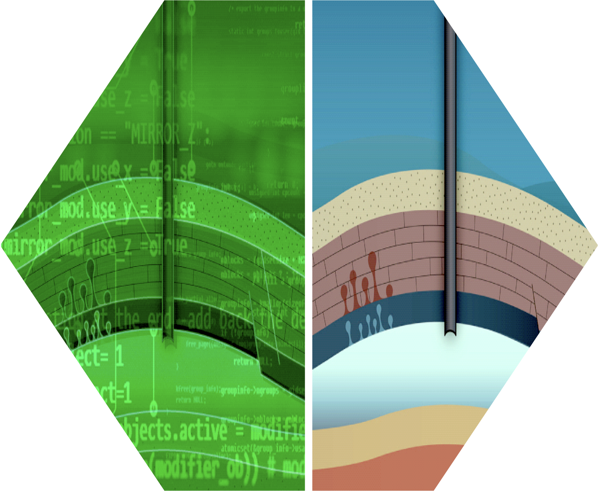

Welcome to Digital Twins for Physical Systems
Introduction
2026-01-12
An Introduction to Digital Twins: Chapter 1 Overview

adapted from here
Course outline
This is an advanced course that be further developed during this term.
are all made available and constantly updated on
Objectives
By the end of the semester, you will be made familiar with …
- the concept of Digital Twins and how they interact with their environment
- Statistical Inverse Problems and Bayesian Inference
- techniques from Data Assimilation (DA), Generative AI, Simulation-Based Inference (SBI), ML-enabled DA, and Uncertainty Quantification [UQ]
For more on the Course outline, Topics, and Learning goals, see Goals.
Textbooks
| Data assimilation: methods, algorithms, and applications | Asch, Bocquet, and Nodet (2016), Mark | SIAM, 2016 |
| A toolbox for digital twins: from model-based to data-driven1 | Asch (2022), Mark | SIAM, 2022 |
Journal Papers
| A comprehensive review of digital twin—part 1: modeling and twinning enabling technologies | Thelen et al. (2022) | Springer, 2022 |
| A comprehensive review of digital twin—part 2: roles of uncertainty quantification and optimization, a battery digital twin, and perspectives | Thelen et al. (2023) | Springer, 2022 |
| Sequential Bayesian inference for uncertain nonlinear dynamic systems: A tutorial | Tatsis, Dertimanis, and Chatzi (2022) | Arxiv, 2022 |
| Some models are useful, but how do we know which ones? Towards a unified Bayesian model taxonomy | Bürkner, Scholz, and Radev (2023) | Statist. survey, 2023 |
| Diffusion Models in Simulation-Based Inference: A Tutorial Review | Arruda et al. (2025) | Arxiv, 2025 |
Introduction
- Different definitions of Digital Twins
- Data Flows
- Dimensions Digital Twins
- the Inference Cycle
Definition of Digital Twin
Definition from (Asch 2022): “A set of virtual information constructs that mimics the structure, context, and behavior of an individual/unique physical asset, or a group of physical assets, is dynamically updated with data from its physical twin throughout its life cycle and informs decisions that realize value.”
- Definition by the Aerospace Industries Association
- Mirroring physical assets in a dynamic manner
Definition by IBM: “A digital twin is a virtual representation of an object or system that spans its lifecycle, is updated from real-time data, and uses simulation, machine learning and reasoning to help decision making.”
Definition of Digital Twin (cont’ed)
Definition from (National Academies of Sciences, Medicine, et al. 2023): “A digital twin is a set of virtual information constructs that mimics the structure, context, and behavior of a natural, engineered, or social system (or system-of-systems), is dynamically updated with data from its physical twin, has a predictive capability, and informs decisions that realize value. The bidirectional interaction between the virtual and the physical is central to the digital twin.”
Also see discussion Section 2 of “A comprehensive review of digital twin — part 1”.
Cyber-Physical Systems (CPS)
- Model Systems of Systems (SoS) by equations
- How the two worlds—digital and physical—intertwine?
- How does the digital inform the physical, and how does the physical shape our understanding of digital processes?

Data flows
For a digital model, data flow between the physical space and virtual space is optional
For a digital shadow, data flow is unidirectional from physical to digital.
But for digital twin, the data flow has to be bidirectional. See Figure.

Five dimensional Digital Twin
\[\mathrm{DT} = \mathbb{F} (\mathrm{PS, DS, P2V, V2P, OPT})\]
five- dimensional digital twin model consists of
a physical system (PS),
a digital system (DS),
an updating engine (P2V),
a prediction engine (V2P),
and an optimization dimension (OPT).
\(\mathbb{F}(⋅)\) integrates all five dimensions together to define a Digital Twin.

Five dimensions
\[\mathrm{DT} = \mathbb{F} (\mathrm{PS, DS, P2V, V2P, OPT})\]

from (Thelen et al. 2022)
The Inference Cycle
- Scientific method — inferential process
- Abduction — going from (unexplained) effect to (possible) cause
- Deduction — going from cause to effect
- Induction — going from specific to general

The Concept of a Digital Twin
the availability of (large) volumes of (often real-time) data,
the accessibility to this data,
the tools and implementations of AI-based algorithms,
the body of knowledge of mathematical models,
the readiness and low cost of computational devices,
Necessary ingredients for a Digital Twin that learns during its life cycle
consists of static part — initial model, design, and
dynamic part — includes the simulation process, coupled with data acquisition, and finally autoupdating.
The Spectrum of Digital Twins
- From model-driven to data-driven
- Importance of models, data, and competencies
Digital Twins in the Digital Continuum
- Interaction with digital infrastructure
- Cloud computing, IoT, and cybersecurity
- Emphasis in this course will be on monitoring & control of physical systems ruled by PDEs
- geological CO2 storage
- battery life

Geological Carbon Storage

- coupling of fluid-flow physics and
- wave physics
Models, Data, and Coupling in Digital Twins
Questions:
What is meant by a “model”?
What are data to be used for?
How, if possible, can we couple the above two to construct the most informative DT?
Will be discussing two types of models throughout the book:
- Equation-based models that are derived, most often, from some conservation laws.
- Statistical, data-driven models that are based on measured data and its analysis.
A good statistical model: should attain a good balance between under/overfitting.
Physical models: need to capture the higher order terms and neglect small terms.
Bloated models will often be difficult to solve numerically.
Examples and Use Cases
- Predictive maintenance, personalized medicine, sports, agriculture, geophysics
Recommended Approach—The Triple-Loop Method
Three loops: Space and time, optimization, decision-making
Loops over space and time and solution of the physical problem in the inner loop.
Optimization in the outer loop, including control, solution of an inverse problem, parameter estimation, uncertainty quantification, and multifidelity modeling using surrogates.
Decision making in the outer-outer loop— preventative maintenance, shutting down operations …
Important to ensure trustworthiness of the DT - checking operational and validity regimes of the model, and - implement an expert system based on engineering experience.
Future Directions
- Evolution from simple to AI-integrated systems
- Theoretical and practical advancements
- Facilitates a more general interpretation where we can map machine learning techniques, or AI, to any of the stages

References
